Fight Arena
Scripts in
scripts/quests/quest_arena/NPCs involved
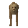
Dog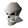
General Khazard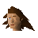
Joe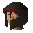
Khazard Guard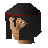
Khazard Guard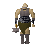
Khazard Ogre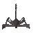
Khazard ScorpionItems involved
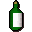
Khali brew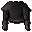
Khazard armour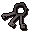
Khazard cell keys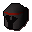
Khazard helmet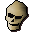
SkullInvolvement is derived from identifiers referenced by the quest scripts.